OpenPGP Zimlet User Help
Contents
- Why Use PGP?
- Generating a new key pair
- Clear signing a message
- Adding Public Keys
- Encrypting a message
- Storing public keys to Zimbra contacts
- Working with attachments
- Thunderbird/Enigmail compatibility
- Fingerprint
- About OpenPGP Zimlet
- License and third party FOSS libraries
Why Use PGP?
PGP stands for "Pretty Good Privacy," and it's most often used for two things:- Privacy:
Prevent people other than the intended recipients from reading an email message. - Authenticity:
Ensure a message was send by the person you think it was and no one else altered the email message.
OpenPGP Zimlet
Generating a new key pair
Right click on OpenPGP and then click "Generate key pair".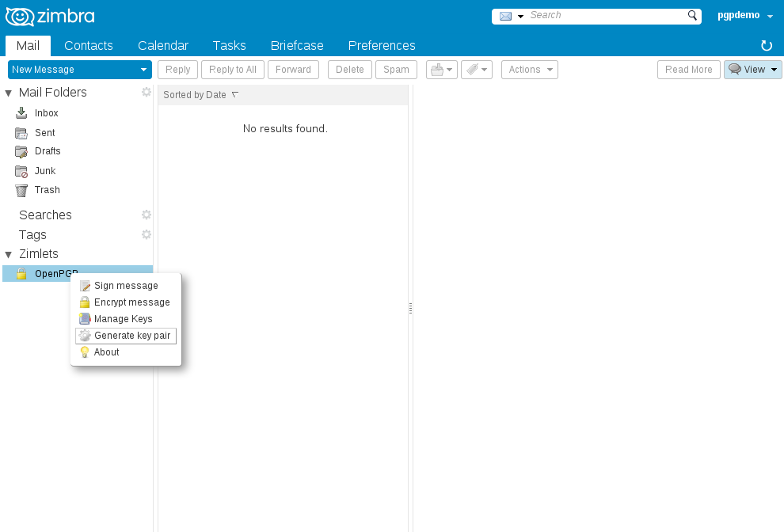
In the "Generate new key pair" window check if all the fields are correctly filled by the server. Correct when necessary. See the table below:
| Name | example: Firstname Lastname Your name. This will be used as part of the User ID of your new key pair. |
| Email address | example: lellison@redhat.com,jwhitehurst@oracle.com One or more email adresses you want to use with your new key pair. |
| Passphrase |
|
| Key Length |
Longer is better and also slower. The following list is ordered by best browser PGP performance and a Key Length recommendation for every day use:
|
| Store and overwrite | Recommended for new users, automatically set the generated keys to the "Manage keys" window. |
When you are done, click OK and wait for your browser to generate your keys.
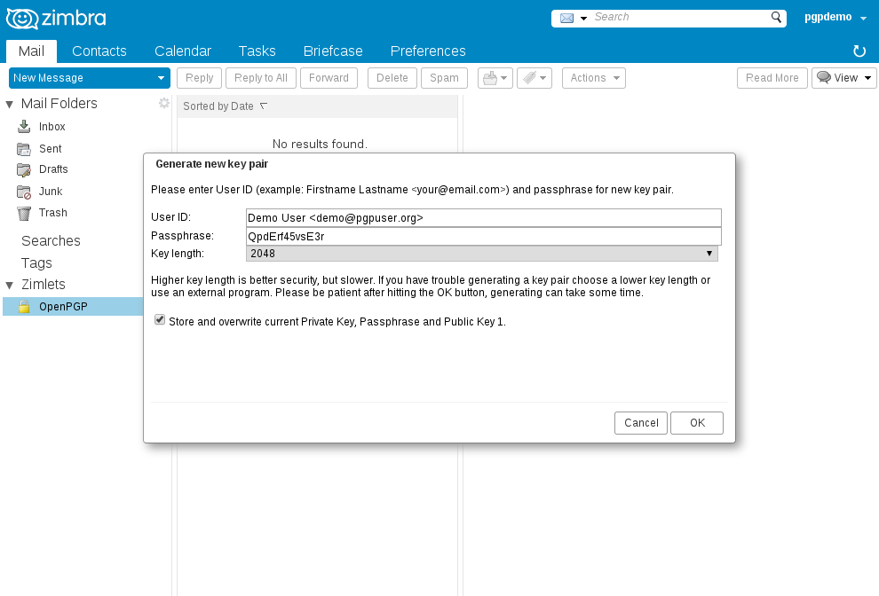
Copy and paste the result and store it in a safe place. When you are done, click OK.
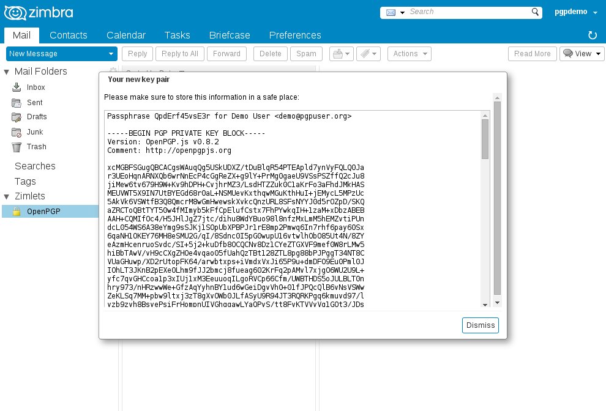
Now go back to the "Manage keys" window. You should see your keys and passphrase there now. Click OK.
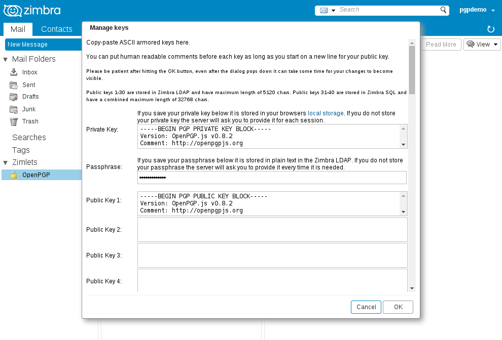
Clear signing a message
Compose an E-mail message like usual in Zimbra, then click the Sign button when you are done.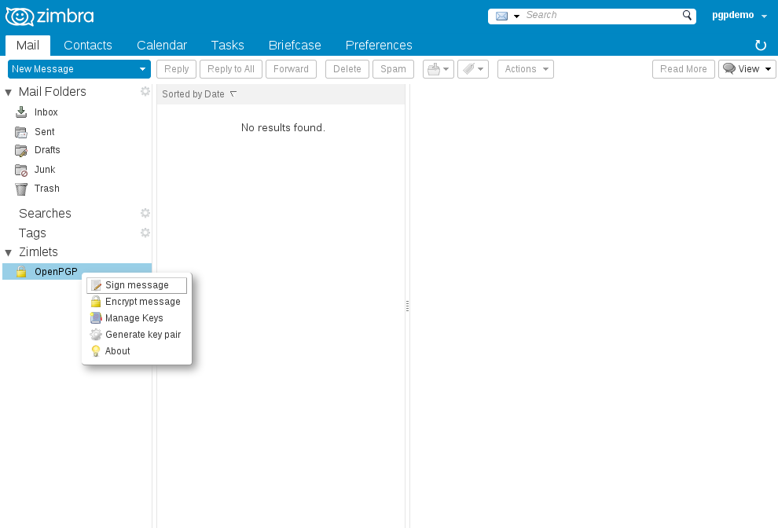
Enter your Private Key and Passphrase if needed. Click OK when you are done.
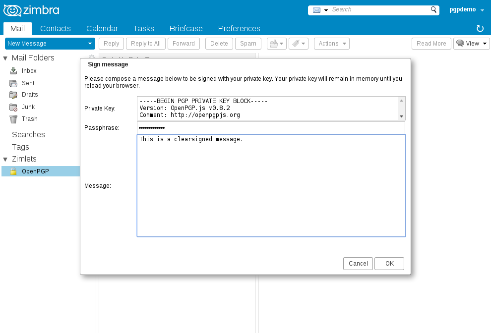
You will now see the Zimbra compose window with your signed message. Enter a subject and select recipients like a normal mail and click Save Draft and Close when you are done.
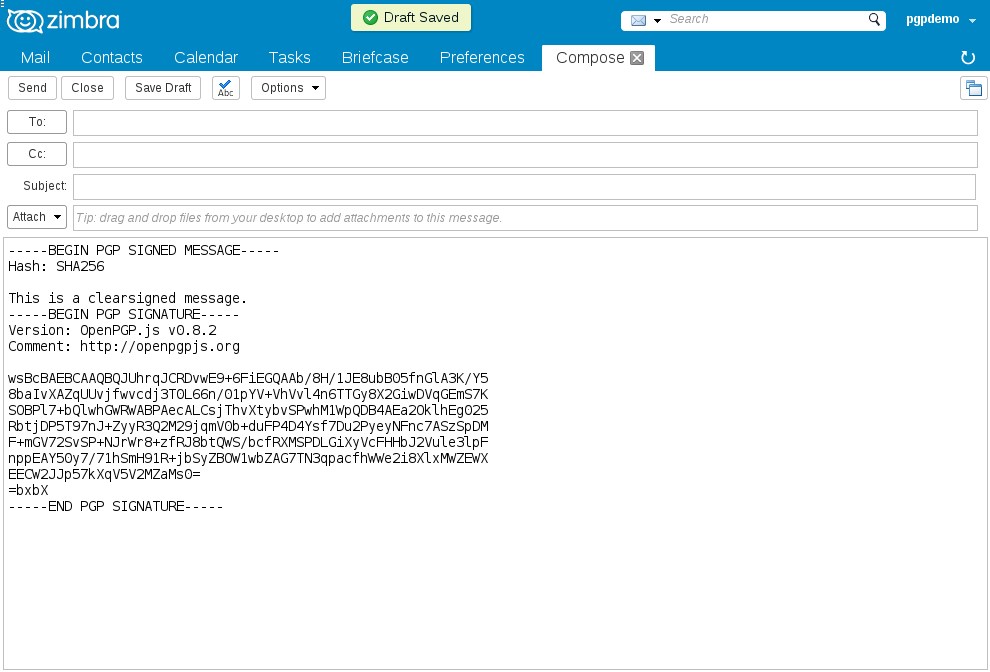
Go to your Drafts folder and click the mail you just created. You should see "Got a good signature". You can now open and send your mail.

Adding Public Keys
Before you can encrypt messages or verify signatures you must copy-paste Public Keys of the people you wish to communicate with to the "Manage keys" window. This example adds Public Key 2. Click OK when you are done.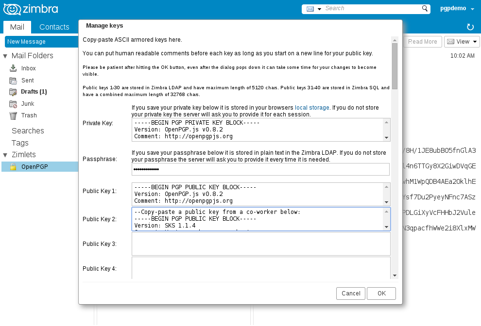
Encrypting a message
Compose an E-mail message like usual in Zimbra, then click the Encrypt button when you are done.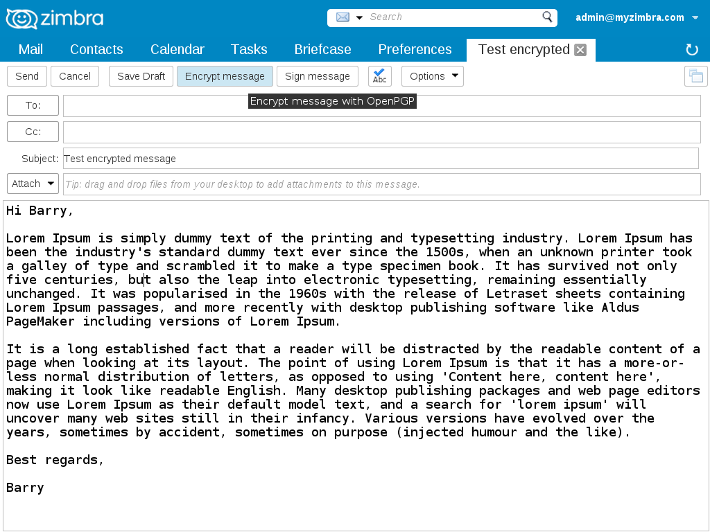
In the "Encrypt message" window:
- Select one or more recipients using (CTRL+click). You may wish to select yourself so you can read the message afterwards
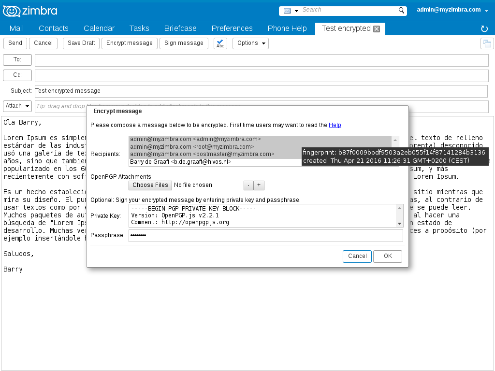
Adding attachments
If you want to attach encrypted documents to your mail, select them using the Choose Files button. You can select multiple files from your computer and/or use the + and - button to add and remove attachments to your message. Please note that filenames are NOT encrypted.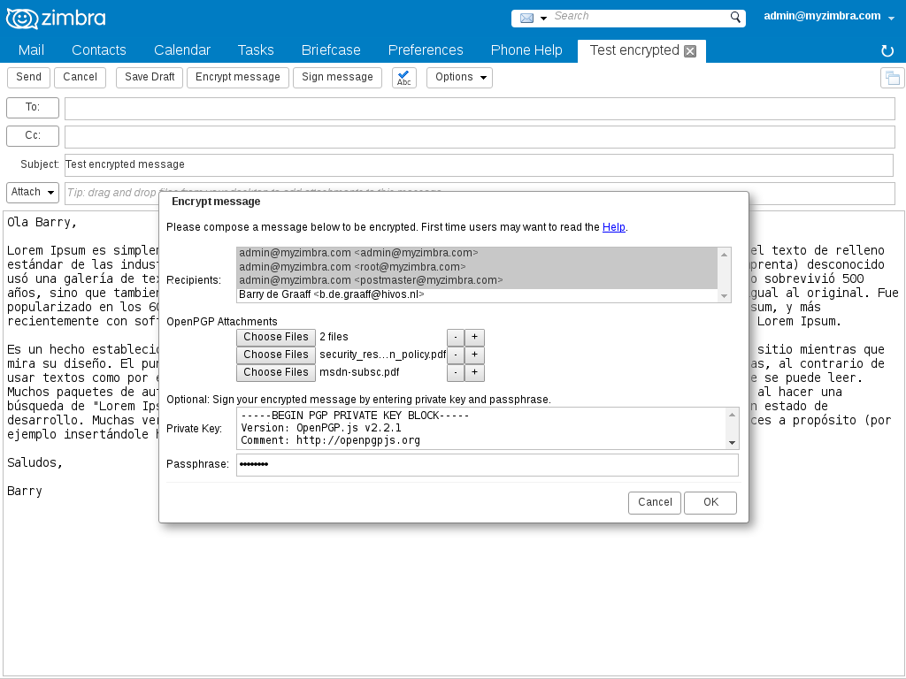

Go to your Sent folder and click the mail you just sent. You should see "Got a good signature.", in case you selected yourself as one of the recipients you should now also see your message text. You can also open attachments by clicking the Decrypt file link.
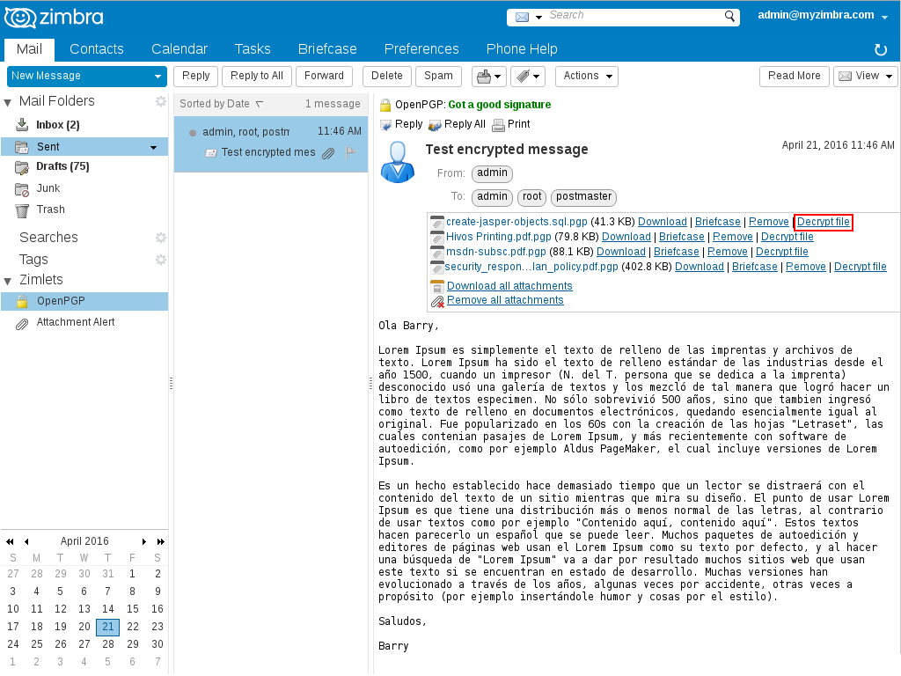
Storing public keys to Zimbra contacts
Optionally you can store public keys in Contacts, the Zimbra Addressbook. First enable the Scan Contacts option then copy/paste public keys to the notes field of your contacts.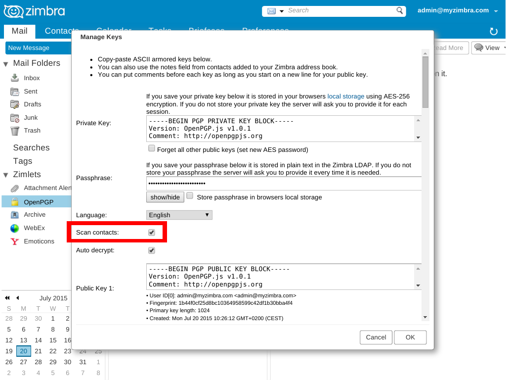
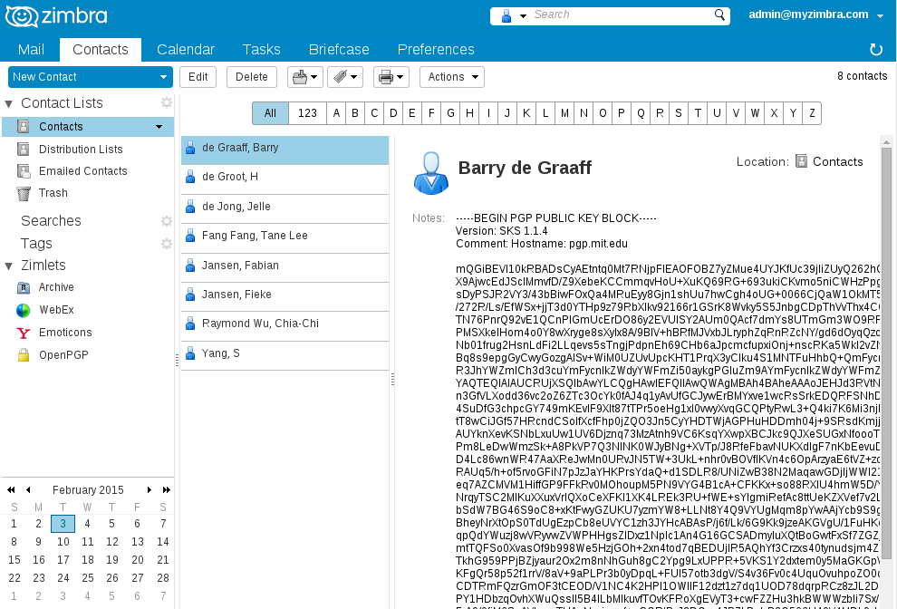
Reading messages encrypted/signed with Thunderbird/Enigmail
OpenPGP/MIME encrypted messages using RFC 3156 implemented in Thunderbird/Enigmail can be decrypted and verified by this Zimlet. This is beta functionality. Plain text messages and attachments are supported. HTML formatted messages are converted to plain text.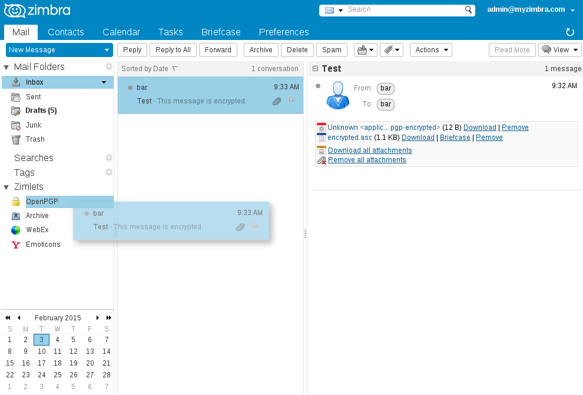
Attachments encrypted by Zimbra OpenPGP Zimlet can be decrypted by Thunderbird/Enigmail users, right click the attachment and click `Decrypt and Open`.

Fingerprint
Key fingerprint verification is actually much easier than it sounds. In a nutshell, both sides should compare the fingerprints of the public key in question. If the fingerprints match, then they can proceed to send a test message. If they do not, then the key can NOT be trusted.The process of comparing fingerprints should be performed through a mechanism whereby the identity of the owner of the public key in question is known or trusted. This may come in the form of a phone call to a trusted phone number, a face-to-face conversation, photo ID verification, or all of the above. Obviously, the goal is to ensure that the person you are communicating with is who you think he or she is. If you know the key’s owner and recognize their voice, it is easy enough to call them and verify the key’s fingerprint over the telephone.
It is best to use a different communication method than the one that was used to send the key itself. A good combination is to send the key via e-mail, and the key fingerprint via a telephone conversation or received in person on a business card.
Zimbra OpenPGP Zimlet
If you find Zimbra OpenPGP Zimlet useful and want to support its continued development, you can make donations via:- PayPal: info@barrydegraaff.tk
- Bank transfer: IBAN NL55ABNA0623226413 ; BIC ABNANL2A
Credits
- Michael Graziano enhancements
- Truong Anh Tuan enhancements
- Marius Savelbergh funds
- Klaus Belser funds
- Hivos.org funds
- OpenPGP.js
- and others.
License and third party FOSS libraries
Copyright (C) 2014-2016 Barry de GraaffThis program is free software: you can redistribute it and/or modify
it under the terms of the GNU General Public License as published by
the Free Software Foundation, either version 2 of the License, or
(at your option) any later version.
This program is distributed in the hope that it will be useful,
but WITHOUT ANY WARRANTY; without even the implied warranty of
MERCHANTABILITY or FITNESS FOR A PARTICULAR PURPOSE. See the
GNU General Public License for more details.
You should have received a copy of the GNU General Public License
along with this program. If not, see http://www.gnu.org/licenses/.
openpgp.js
openpgp.worker.js
OpenPGP.js is a Javascript implementation of the OpenPGP protocol. This is defined in RFC 4880.
https://github.com/openpgpjs/openpgpjs
Licensed under the GNU Lesser General Public License (3.0 or any later version).
zlib.min.js.map
JavaScript Zlib Library
https://github.com/imaya/zlib.js
Copyright © 2012 imaya. Licensed under the MIT License.
aes.js, aes-ctr.js
JavaScript implementation of AES standard (NIST FIPS-197) for symmetric encryption. http://www.movable-type.co.uk/scripts/aes.html
https://github.com/chrisveness/crypto
Copyright © 2014 Chris Veness. Licensed under the MIT License.
quoted_printable_decode function
php.js implements PHP functions in JavaScript
https://github.com/kvz/phpjs
Copyright (c) 2013 Kevin van Zonneveld (http://kvz.io) and Contributors (http://phpjs.org/authors)
htmlToText.js
jsHtmlToText is a *very* basic regex-based HTML stripper.
https://github.com/eldios/htmlToText
Copyright (C) 2006 Google Inc. Licensed under the Apache License, Version 2.0
Icons ans logo
Icons and logo where taken from the tango-icon-theme package and where released to the Public Domain by the Tango Desktop Project.
File encrypted icon (file-pgp-encrypted) by Jakub Steiner http://jimmac.musichall.cz/ This file is licensed under the Creative Commons Attribution-Share Alike 2.0 Generic license.